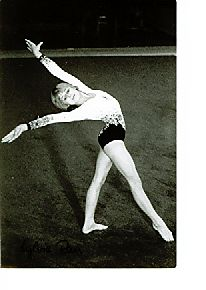

Silvia Rau (GDR)
1983 GDR AA Champion
1983 Cottbus International AA Champion

Medal Total
World Championships: 1 Bronze
Competition Results
1979
Jr. SC Leipzig-HUN Dual Meet: 2nd AA
1980
Dinamo Spartakiade: 4th AA
Jr. Friendship Tournament (Druzhba): 2nd Team, 6th AA, 2nd B, 3rd FX, 5th
UB
1981
Dinamo Spartakiade: 5th AA
Hungarian International: 2nd AA
1982
Chunichi Cup: 4th AA
GDR Championships: 3rd AA
GDR-HUN Dual Meet: 1st Team, 2nd AA
Jr. European Championships: 4th AA, 2nd UB, 5th B, 6th FX, 7th
Tokyo Cup: 2nd UB
1983
Cottbus International: 1st AA, 1st UB, 2nd B, 3rd V
European Championships: 6th AA, 4th UB, 5th B, 8th V
GDR Championships: 1st AA
GDR-HUN Dual Meet: 1st Team, 1st AA
World Championships: 3rd Team, 12th AA, 5th B, 6th V
1984
GDR Championships: 5th AA, 2nd B
This page was created on September
12, 2004 and was last updated on February 24, 2021.
© Gymn Forum